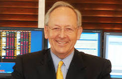

Charles T. "Chuck" Akre is an
American investor, financier and businessman. He serves on the board of
directors of Enstar Group, Ltd., a Bermuda run-off reinsurance company, he is
also the founder, chairman and chief investment officer of Akre Capital
Management, FBR Focus, and other funds. Akre Capital Management is based in
Middleburg, Virginia.
Akre held positions as
shareholder, Director, CEO of the Asset Management Division and Director of
Research at Johnston, Lemon & Co. (a NYSE member firm). Akre established his own
firm, Akre Capital Management, in 1989 and operated it as part of Friedman,
Billings, Ramsey & Co. until 1999. In 2000, ACM became independent again.
Akre established its current
location in Middleburg, Virginia in early 2002 while running the FBR Focus Fund,
a small- and mid-cap value mutual fund. While Akre was managing the FBR Focus,
it performed in the top 1% of small/mid-cap growth funds in 2002, 2004, and
2006, as well as the 2nd percentile in 2001 and the 6th percentile in 2008. In
2008, Akre's FBR Small Cap VAlue fund consisted of $55 million; in total in 2003
Akre managed about $135 million. After breaking from FBR, Akre started the Akre
Focus Fund in 2009. As of 2009 the fund had about $800 million in assets, while
Akre had a seven figure stake in the fund.
Akre Capital Management is a
long-term, concentrated value investment firm. Akre's and his team of analysts
do intense research, and are known for their contrarian investments, most
notably in the cell phone tower space during 2001-2003.
"I've managed the portfolio
the whole time and I've never changed the investment approach," Akre said to CNN
Money. "We've been all of them. I don't box myself in."
Charles Akre uses an
investment philosophy that he calls the "three-legged stool" approach, which
calls for examining business models, rates of return, and reinvestment
opportunities. The stool is a reference to a three-legged milking stool he keeps
in his office – because it is low to the ground, a farmer sitting on it would
not fall far if it flipped over. The implication for investing is that if the
economy is rattled, fund investors won't be hit with serious damage.
Good investments are
businesses that possess four characteristics:
Good managers with
demonstrated track records
Significant and durable
competitive advantages
Long-term
growth/reinvestment opportunities
Attractive purchase prices
relative to the cash flows generated by the company
Heavily influenced by Thomas
Williams Phelps book "100 to 1 in The Stock Market" and Warren Buffett's letters
to Berkshire Hathaway shareholders, Akre coined the term "compounding machines"
to describe businesses that are capable of compounding the shareholders' capital
at high rates for long periods of time with little risk of permanent loss (not
temporary quotational loss) of capital.
Akre is said to have
invested in Berkshire Hathaway in 1977. Deeply influenced by Buffett's ideas on
investing, Akre keeps a framed letter that Warren Buffett sent him on his office
wall. Akre, for example, puts a strong emphasis on finding the competitive
advantage of the companies he invests in. "We spend a lot of time trying to
figure out what's causing this," he said in an interview with CNN Money. "What
is it that allows them to have what the world calls 'the economic moat'?"
The investment portfolio is
quite tight: Akre's FBR Focus fund often may only have between two and three
dozen investments, with the top 10 consisting of 75% of the total assets. Small
and mid-cap stocks are the usual targets for investment, because they generally
have higher growth rates. He often holds companies for many years.
The company was hit hard by
the recession in 2008. "In 2008 we got it wrong. That's just the reality," he
told CNN Money. From that point forward they began spending more time with
government, economic policy, and sustainability experts in order to "help us
think about the world in general in ways that are better than we have in the
past."
From December 1996 to October 2009, FBR focus had achieved annualized returns of 12.5%, which "trounced the Russell 2000 Growth index, a measure of small, fast-growing companies, by ten percentage points per year, on average," according to Kiplinger, an investment advice website, which added the company to its list of 25 recommended funds.